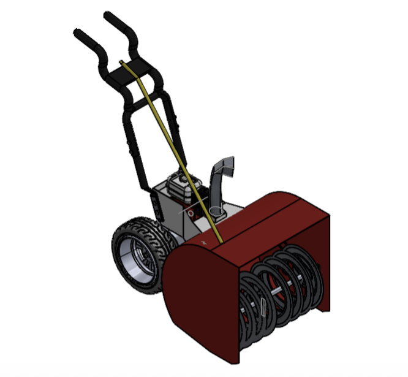
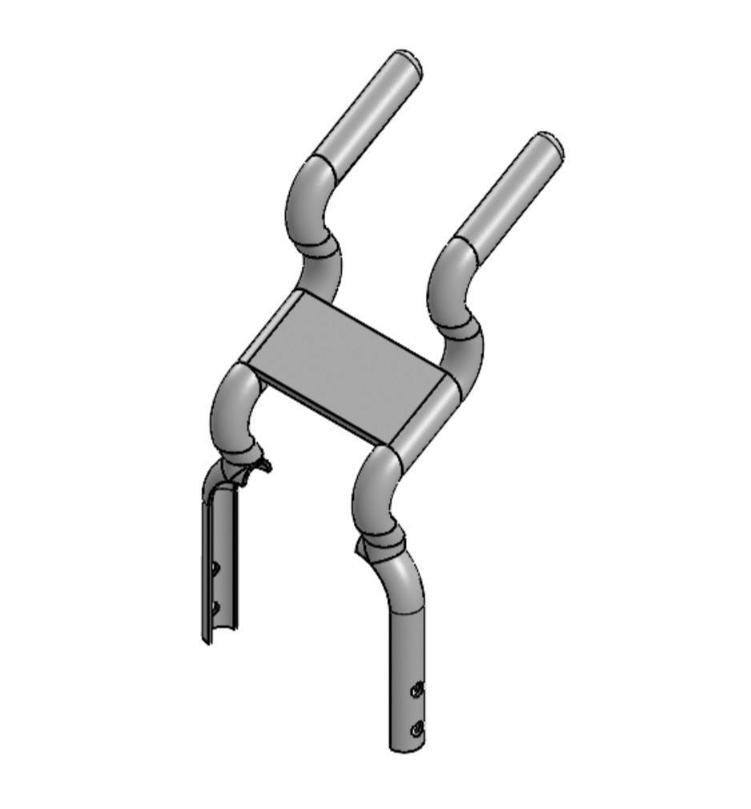
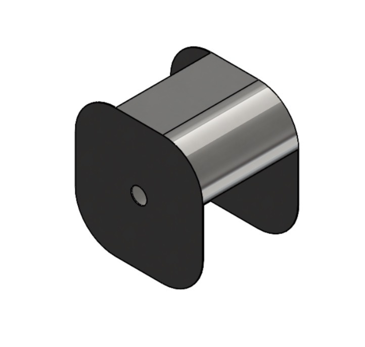
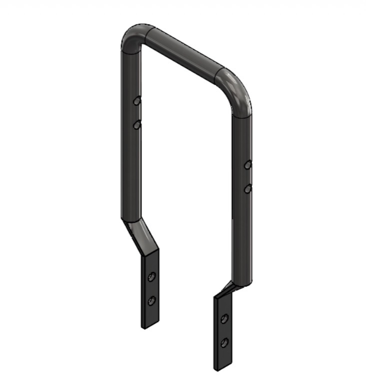
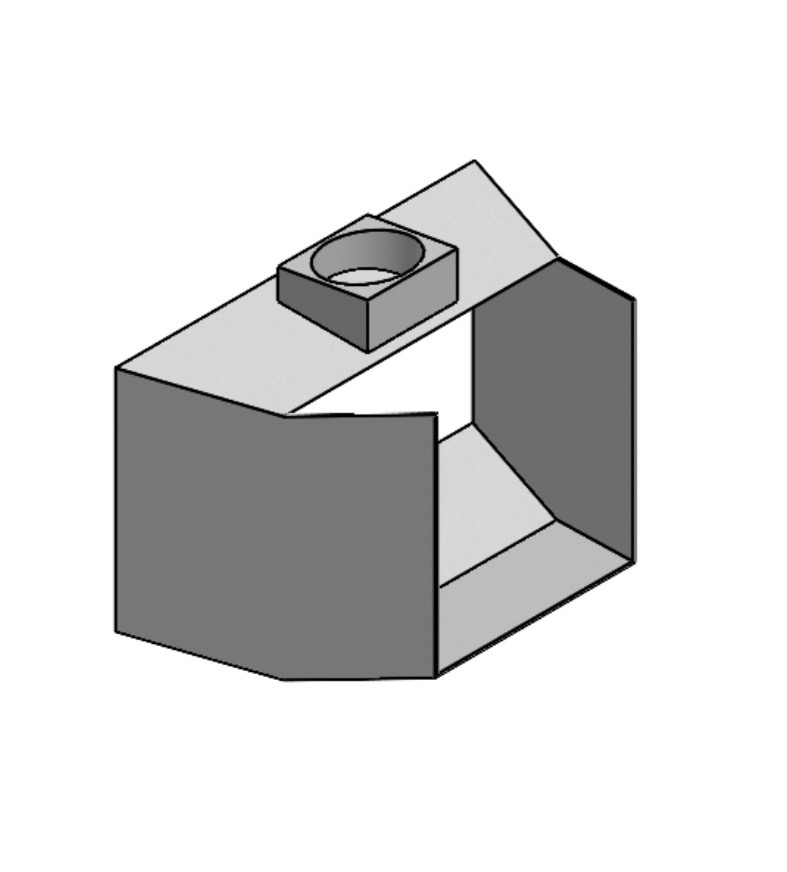
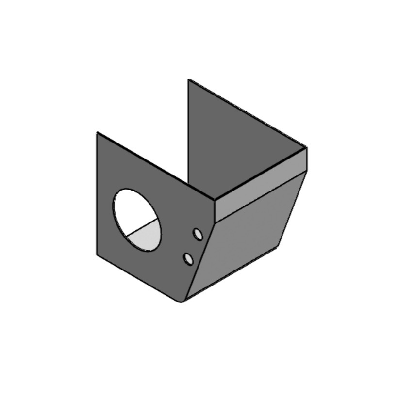
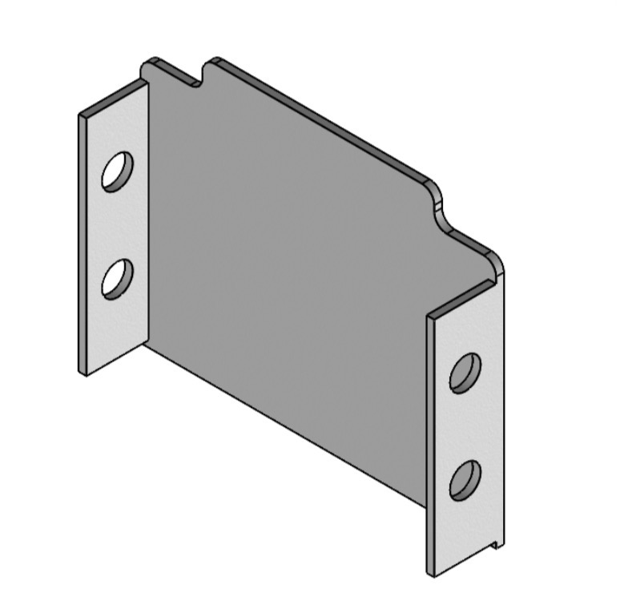
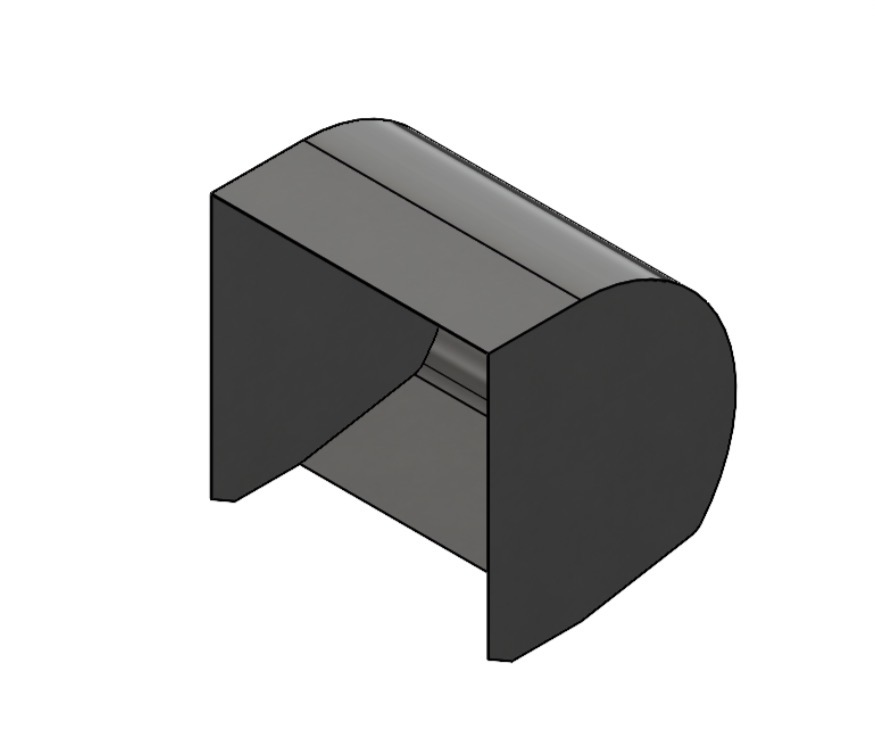
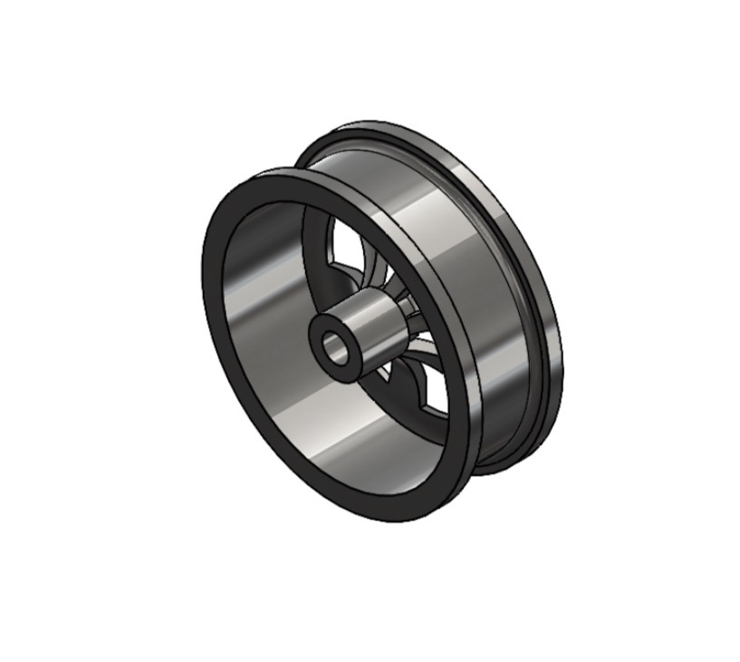
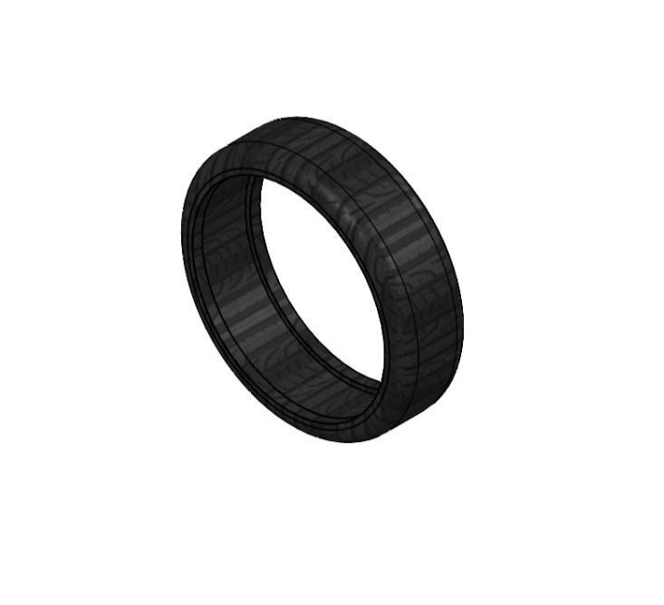

Snow Blower Assembly & CAD Design
MEMS 2150 • Mechanical Design Project

Project Overview
This project involved designing and assembling a complete snow blower in SolidWorks using engineering drawings. Each component was modeled parametrically before being integrated into a fully constrained mechanical assembly. The project emphasized accurate feature creation, assembly relationships, and professional CAD practices used in mechanical design.
Design Objectives
- Create accurate parametric 3D models from engineering drawings.
- Apply appropriate SolidWorks features and design intent.
- Assemble all components using proper mates and constraints.
- Verify component fit and eliminate assembly interference.
- Generate a complete mechanical assembly representative of a real product.
Parts I Modeled
I individually modeled nine mechanical components from engineering drawings using SolidWorks. Each part required accurate dimensioning, sketching, feature creation, and parametric modeling before being incorporated into the final assembly.









Final Assembly

After each component was completed, the individual parts were assembled using SolidWorks mates to accurately constrain their motion and relative positions. The completed model was evaluated for proper alignment, clearances, and overall assembly integrity.
Engineering Skills Developed
My Contribution
I modeled nine individual mechanical components in SolidWorks from engineering drawings and integrated them into the completed assembly. Throughout the project I applied parametric modeling techniques, mechanical assembly constraints, and engineering drawing interpretation while verifying part fit and assembly functionality.
Project Takeaways
This project strengthened my proficiency in SolidWorks and reinforced the fundamentals of mechanical design, engineering drawing interpretation, parametric CAD modeling, and assembly creation. Completing a complex multi-part assembly provided valuable experience translating engineering documentation into a functional three-dimensional mechanical system.